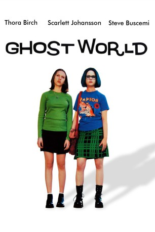
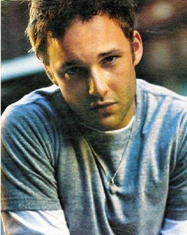
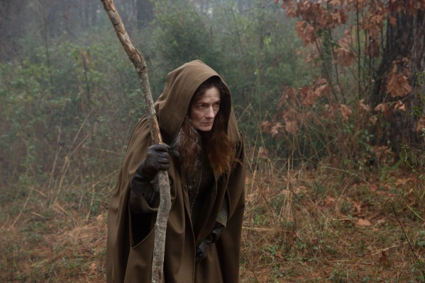

#1963 Ghost World
Auszeichnungen: für 1 Oscars nominiert
 
 IMDB-Wertung: 7.4 / 10
IMDB-Wertung: 7.4 / 10  Metascore: 88
Metascore: 88 
Enid und Rebecca sind "beste Freundinnen", die gerade ihren Schulabschluss hinter sich haben. Gemeinsam sind sie von dem kleinstädtischen und spießbürgerlichen Leben um sich herum nur angeödet. Umgeben von kleingeistigen Normalos und Fast Food Kultur wissen sie, dass sie eines nicht wollen, nämlich diesen grotesken "Amerikanischen Traum". Während Rebecca einen Job annimmt, muss Enid noch einen Kunstkurs wiederholen, die gemeinsame Wohnung muss warten. Enid antwortet aus Spaß auf eine Kontaktanzeige und lernt den etwas seltsamen Seymour kennen. Eigentlich wollte sie sich nur an einem idiotischen Verzweifelten belustigen. Sie stellt aber fest, er ist das genaue Gegenteil von allem, was sie so sehr hasst.
Jahr: 2001
Dauer: 111 Minuten
FSK: 6
Land: USA Studio: United ArtistsTonspuren: DTS - ,
Untertitel:
Auflösung: 1080p (1920x1040) Größe: 8744 MB
Genre: Komödie, Drama
Regisseur: Terry Zwigoff
Drehbuch: Daniel Clowes, Daniel Clowes, Terry Zwigoff
Soundtrack: David Kitay
Darsteller:
 Thora Birch als Enid
Thora Birch als Enid Scarlett Johansson als Rebecca
Scarlett Johansson als Rebecca Steve Buscemi als Seymour
Steve Buscemi als Seymour-  Brad Renfro als Josh
 Illeana Douglas als Roberta Allsworth
Illeana Douglas als Roberta Allsworth Bob Balaban als Enid's Dad
Bob Balaban als Enid's Dad Stacey Travis als Dana
Stacey Travis als Dana Charles C. Stevenson Jr. als Norman
Charles C. Stevenson Jr. als Norman Dave Sheridan als Doug
Dave Sheridan als Doug Tom McGowan als Joe
Tom McGowan als Joe- Debra Azar als Melora
 Brian George als Sidewinder Boss
Brian George als Sidewinder Boss Pat Healy als John Ellis
Pat Healy als John Ellis- Rini Bell als Graduation Speaker
 T.J. Thyne als Todd
T.J. Thyne als Todd Ezra Buzzington als Weird Al
Ezra Buzzington als Weird Al- Lindsey Girardot als Vanilla - Graduation Rapper
- Joy Bisco als Jade - Graduation Rapper
- Venus DeMilo als Ebony - Graduation Rapper
 Ashley Peldon als Margaret - Art Class
Ashley Peldon als Margaret - Art Class Marc Vann als Jerome, the Angry Guy - Record Collector
Marc Vann als Jerome, the Angry Guy - Record Collector James Sie als Steven, the Asian Guy - Record Collector
James Sie als Steven, the Asian Guy - Record Collector Paul Keith als Paul, the Fussy Guy - Record Collector
Paul Keith als Paul, the Fussy Guy - Record Collector David Cross als Gerrold, the Pushy Guy - Record Collector
David Cross als Gerrold, the Pushy Guy - Record Collector- Dylan Jones als Red-Haired Girl - Blues Club
- Martin Grey als M.C. - Blues Club
- Steve Pierson als Blueshammer Member - Blues Club
 Jake La Botz als Blueshammer Member - Blues Club
Jake La Botz als Blueshammer Member - Blues Club- Charles Schneider als Joey McCobb, the Stand Up Comic
 Patrick Fischler als Masterpiece Video Clerk
Patrick Fischler als Masterpiece Video Clerk- Daniel Graves als Masterpiece Video Customer
- Matt Doherty als Masterpiece Video Employee
 Joel Michaely als Porno Cashier
Joel Michaely als Porno Cashier Debi Derryberry als Rude Coffee Customer
Debi Derryberry als Rude Coffee Customer Joseph Sikora als Reggae Fan
Joseph Sikora als Reggae Fan- Brett Gilbert als Alien Autopsy Guy
 Alex Solowitz als Cineplex Manager
Alex Solowitz als Cineplex Manager- Mary Bogue als Popcorn Customer
- Brian Jacobs als Soda Customer
 Lauren Bowles als Angry Garage Sale Woman
Lauren Bowles als Angry Garage Sale Woman Lorna Scott als Phyllis, the Art Show Curator
Lorna Scott als Phyllis, the Art Show Curator- Jerry Rector als Dana's Co-Worker
-  Diane Salinger als Psychiatrist
 Bruce Glover als Feldman, the Wheel Chair Guy
Bruce Glover als Feldman, the Wheel Chair Guy Joan Blair als Lady Crossing Street Slowly , uncredited
Joan Blair als Lady Crossing Street Slowly , uncredited Teri Garr als Maxine , uncredited
Teri Garr als Maxine , uncredited- Alan Heitz als Driver , uncredited
- Michelle McGinty als Mom in Convenience Store , uncredited
- Greg Wendell Reid als Yuppie #1 , uncredited
- Peter Yarrow als Himself , archive footage, uncredited
Datei: X:\2001\Ghost World (2001, FSK6, 1920x1040).mkv seit 09.09.2015
Festplatte: HD 1996-2002
 Es gibt insgesamt 102 Filme in der Gruppe '2001'
Es gibt insgesamt 102 Filme in der Gruppe '2001'